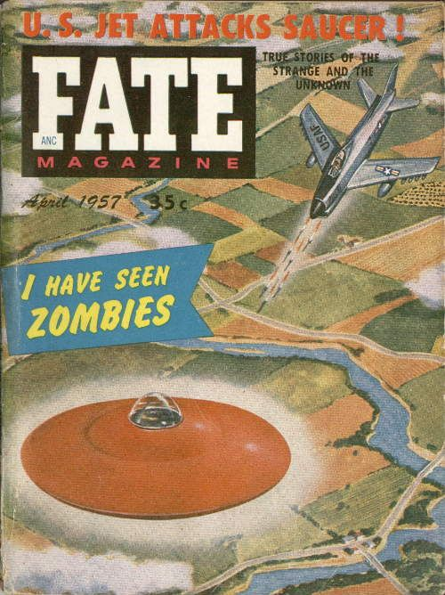
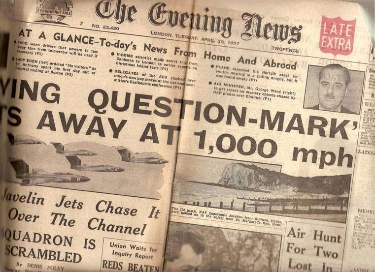

Couverture de Fate ce mois-ci sur l'attaque d'une soucoupe par un avion de chasse

Un U-2 équipé d'un dispositif de masquage radar (n° 341, le 1er
prototype) s'écrase au cours d'un vol d'essai près de Pioche, tuant le pilote Rich, Ben: Skunk Works, 1994Peebles, Curtis, Dark Eagles, Presido Press, 1995.
Dans le Wigtownshire (Ecosse), 3 postes radar repèrent un ovni qui traverse le ciel
à 60000feet, plonge à 14000feet, fait un tour et part au loin UFO Evidence, NICAP, VIII.
Couverture du n° de Amazing Stories de ce mois-ci
Un avion de ligne de catégorie 3 parti de Maiquetia (Venezula)
observe un ovni ; d'étranges signaux radio sont reçus à l'aéroport de Maiquetia au même moment "1957 Sighting Wave Chronology", NICAP.
02:30 A Ringgold (Louisiane),
observation du militaire Robertson pendant Cas Blue
Book n° 4706 non résolu, cas manquant des dossiers officielsNARAIndex du FUFOR.
22:15 En Virginia (MN), Robert Lerdahl et Alex Ellison voient près de 36 ovnis passer
au-dessus d'eux en groupes de 6 et 8 pendant environ. Les ovnis, émanant une lumière verdâtre,
voyagent d'est en ouest à vitesse constante, allant d'un horizon à l'autre en . A travers des
jumelles 16x50, les phénomènes semblent être applatis ou en forme de disque et se déplacer en formation en croissant
UFO Investigator, juillet-août 1960, p. 7.
(ou mai) Au centre de Moriah (New York), la télévision commence à avoir toutes
sortes de problèmes. Le témoin5 appelé dehors arrive à temps pour voir un disque rouge passer au-dessus "1957 UFO Wave Sightings Chronology", NICAP.
Couverture de Fate ce mois-ci sur l'attaque d'une soucoupe par un avion de chasse "An Introduction to FSR
magazine", FSR, 2007

En Angleterre (Royaume Uni), le Evening Times titre
"Point d'interrogation volant - C'est au loin à 1000miles - Des chasseurs Javelin le poursuivent jusqu'au-dessus de la Manche".
Ricardo Machadoson véritable nom reste classé par les Carabineros ou la police provinciale/de l'état d'Argentine -- J.T. vient d'acheter avec ses économies une Harley-Davidson de
qu'il a hâte d'essayer. Après avoir fait le plein dans sa ville de Córdoba (à 480 km
environ à l'ouest de la capitale Buenos Aires), il saute sur sa machine, ouvre les gaz et part en trombe. Les
cheveux dans le vent et les lunettes de soleil écrasées contre le visage, Ricardo roule sur la route à 15 km environ
de l'aéroport international de Cordoba, lorsque sa machine défaille soudain. En quelques
toussotements, le puissant moteur de la Harley s'éteint. Effaré, Ricardo range la moto sur le côté de la route,
descend de la selle en cuir et met la béquille. Démontant à la recherche de la panne, il perçoit un énorme disque
argenté dont il estime la largeur à 18 m et la portion centrale à 4 m de haut. La soucoupe est en vol stationnaire à
15 m du sol, juste devant lui. Terrifié, il se cache dans le fossé. Silencieusement, à l'exception d'un léger
sifflement comme de l'air s'échappant d'une valve, le disque descend à une hauteur d'environ 2 m et une sorte
d'ascenseur descend de sa base, arrivant presque jusqu'au sol. Dedans, un homme d'environ 1,60 m arrive et incite
gentimment le motard à sortir du fossé. L'être frotte alors le front de Ricardo pour le calmer. Son costume est
semblable à la combinaison d'un plongeur, collant de près à son corps, et apparemment fait d'une sorte de plastique.
Entrant dans le disque via "l'ascenseur" avec son compagnon, Ricardo trouve là 5 ou 6 hommes vêtus de même manière,
assis devant des panneaux d'instruments. Une lumière extraordinaire remplit la cabine, et il y a une série de
grandes ouvertures carrées qu'étrangement il n'avait pas pu voir de l'extérieur. Le motard est alors escorté pour
ressortir jusqu'à sa propre machine. Son compagnon pose une main sur son épaule dans un geste d'adieu et rentre dans
l'ascenseur, qui s'élève rapidement dans le disque. Le disc, semblant fait d'un métal iridescent vert bleuâtre,
s'élève rapidement jusqu'à ce que Ricardo pense être 750 m et disparaît rapidement vers le nord-ouest Vers les hautes Andes. Dans l'heure qui suivra environ, une machine semblable aurait été vue
en 6 ou 7 endroits le long de la même route. Ricardo rentre à Cordoba sans dommages Sources 14 & 55 / Henry Regnery Co., Chicago, Ill., 1969, pp. 87-88 < Creighton, G.: "South
America - The Humanoids in Latin America Cases 1-21", < Trainor, J.: "1957: Uneasy Rider", UFO
Roundup, vol. 6, n° 16, 19 avril 2001.